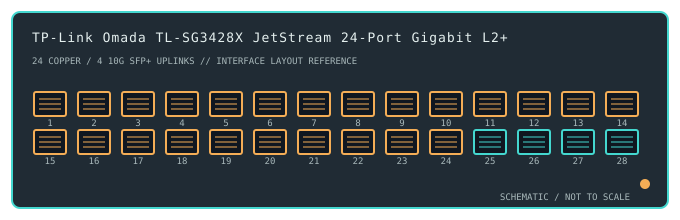

[ MODEL-SPECIFIC NETWORK HARDWARE ]
TP-Link Omada TL-SG3428X JetStream 24-Port Gigabit L2+ Managed Switch
A non-PoE managed 24-port Gigabit switch with four 10G SFP+ uplink slots and Omada SDN integration.

IDENTIFICATION: Confirm the complete product label and hardware revision before applying power, firmware or transceiver assumptions. Link and fabric rates below are nominal vendor specifications, not test results.
Detailed specifications and compatibility
| Subcategory | Managed switches |
|---|---|
| Exact product and model | TP-Link Omada TL-SG3428X JetStream 24-Port Gigabit L2+ Managed Switch |
| Ports / physical interface | 24 × 10/100/1000BASE-T RJ-45 data ports and 4 × 10GbE SFP+ uplink slots. This SKU has no PoE-capable copper ports. |
| Bus and host connection | Rack-mount 1U network switch with 24 copper access ports and four SFP+ cages for compatible optical modules or direct-attach cables; not a host expansion card. |
| Nominal switching performance | 128Gb/s switching capacity listed for the TL-SG3428X. This nominal fabric value does not describe measured application throughput or every configured forwarding path. |
| Power over Ethernet | No PoE output on TL-SG3428X. The related TL-SG3428XMP has a different port-power design and must not be treated as the same SKU. |
| Management and software | Omada SDN centralized management, standalone web UI and CLI provide Layer 2+ functions such as VLAN, ACL, static routing and link aggregation, depending on hardware revision and firmware. |
| Power and physical form | Internal AC-powered 1U rack unit with fan cooling. Follow the label voltage, grounding and airflow requirements; plan SFP+ thermal and optical compatibility. |
| Compatibility | Copper ports negotiate Ethernet rates up to 1Gb/s with compatible peers; SFP+ uplinks accept supported 10GbE modules/DACs. Use an Omada controller supported by the installed firmware or standalone configuration; validate VLAN and routing settings end-to-end. |
| Variant identification | TL-SG3428X is not TL-SG3428XMP or an earlier TL-SG3428 revision. Verify the hardware revision, firmware track and regional SKU before applying feature or transceiver assumptions. |
| Measured throughput | No physical sample was benchmarked for this record. Nominal line rate and switching-fabric ratings are not measured application throughput. |
Revision-specific use notes
TL-SG3428X is not TL-SG3428XMP or an earlier TL-SG3428 revision. Verify the hardware revision, firmware track and regional SKU before applying feature or transceiver assumptions.
Copper ports negotiate Ethernet rates up to 1Gb/s with compatible peers; SFP+ uplinks accept supported 10GbE modules/DACs. Use an Omada controller supported by the installed firmware or standalone configuration; validate VLAN and routing settings end-to-end.
Omada SDN centralized management, standalone web UI and CLI provide Layer 2+ functions such as VLAN, ACL, static routing and link aggregation, depending on hardware revision and firmware.
Archival, ESD and preservation notes
Record the full SKU and hardware revision, serial/date code, firmware release, supply label, installed transceiver identifiers and physical port test results. Keep configuration backups free of credentials and private network details.
Disconnect mains and attached PoE loads before service. Keep optics capped and store transceivers separately with their wavelength, fiber mode and part number recorded.
Manufacturer sources
- TP-Link TL-SG3428X product specificationsManufacturer product or model-specific technical documentation. Verify the exact SKU, hardware revision, region and firmware.
- TP-Link TL-SG3428X support and downloadsManufacturer product or model-specific technical documentation. Verify the exact SKU, hardware revision, region and firmware.
Confirm the source's revision/region applicability against the item label. Manufacturer link rates and capacity ratings are not measurements of application-level throughput.